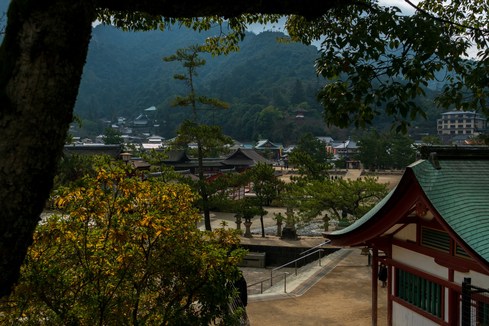
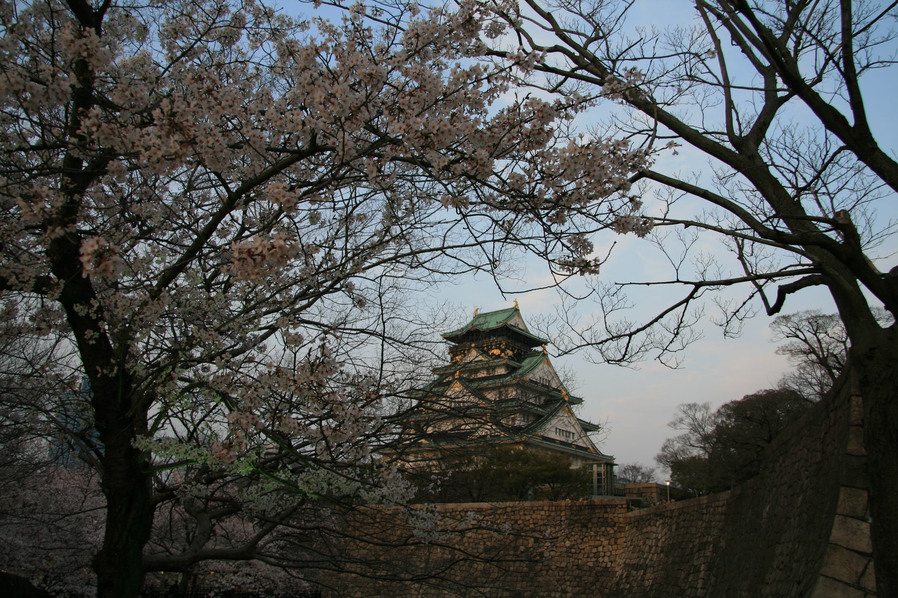

Japan was settled about 35,000 years ago by Paleolithic people from the Asian mainland. About 10,000 years ago, a culture called the Jomon developed. Jomon hunter-gatherers fashioned fur clothing, wooden houses, and elaborate clay vessels. According to DNA analysis, the Ainu people may be descendants of the Jomon.
The second wave of settlement by the Yayoi people introduced metal-working, rice cultivation, and weaving to Japan. DNA evidence suggests that these settlers came from Korea.
The first era of recorded history in Japan is the Kofun (A.D. 250-538), which was characterized by large burial mounds or tumuli. The Kofun were headed by a class of aristocratic warlords, they adopted many Chinese customs and innovations.
Buddhism came to Japan during the Asuka period, 538-710, as did the Chinese writing system. At this time, society was divided into clans. The first strong central government developed during the Nara period (710-794). The aristocratic class practiced Buddhism and Chinese calligraphy, while agricultural villagers followed Shintoism.
Japan's unique culture developed rapidly during the Heian era (794-1185). The imperial court turned out enduring art, poetry, and prose. The samurai warrior class developed at this time as well.
Samurai lords, called "shogun," took over the government in 1185, and ruled Japan in the name of the emperor until 1868. The Kamakura Shogunate (1185-1333) ruled much of Japan from Kyoto. Aided by two miraculous typhoons, the Kamakura repelled attacks by Mongol armadas in 1274 and 1281.
A particularly strong emperor, Go-Daigo, tried to overthrow the shogunate in 1331, resulting in a civil war between competing northern and southern courts that finally ended in 1392. During this time, a class of strong regional lords called "daimyo" increased in power, their rule lasted through the end of the Edo period, also known as the Tokugawa Shogunate, in 1868.
That year, a new constitutional monarchy was established, headed by the Meiji Emperor. The power of the shoguns came to an end.
After the Meiji Emperor's death, the emperor's son became the Taisho Emperor. His chronic illnesses kept him away from his duties and allowed the country's legislature to introduce new democratic reforms. During World War I, Japan formalized its rule over Korea and seized control of northern China.
The Showa Emperor, Hirohito, oversaw Japan's aggressive expansion during World War II, its surrender, and its rebirth as a modern, industrialized nation.